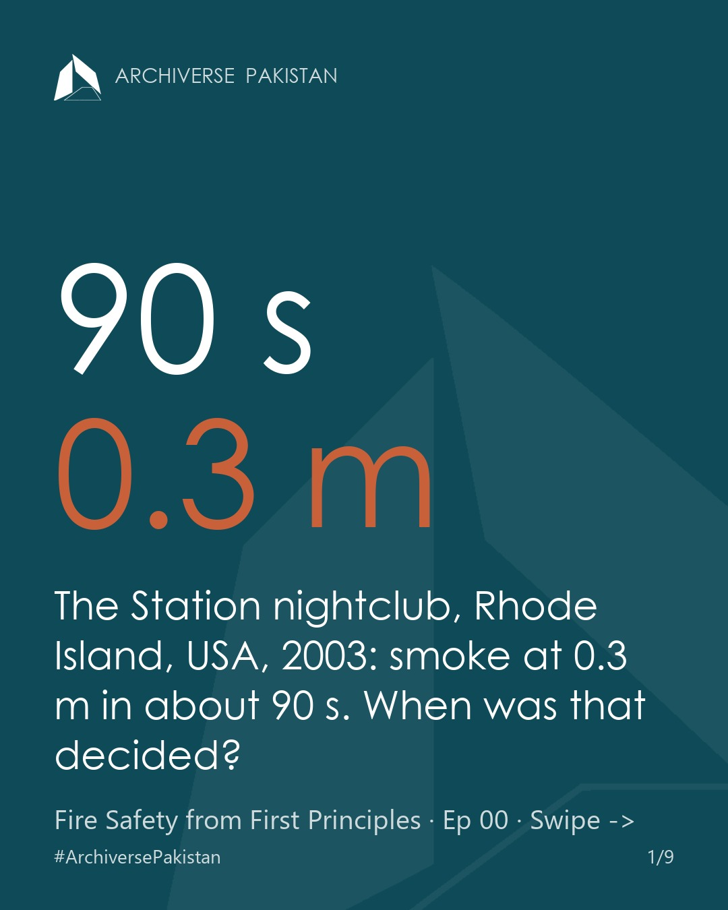
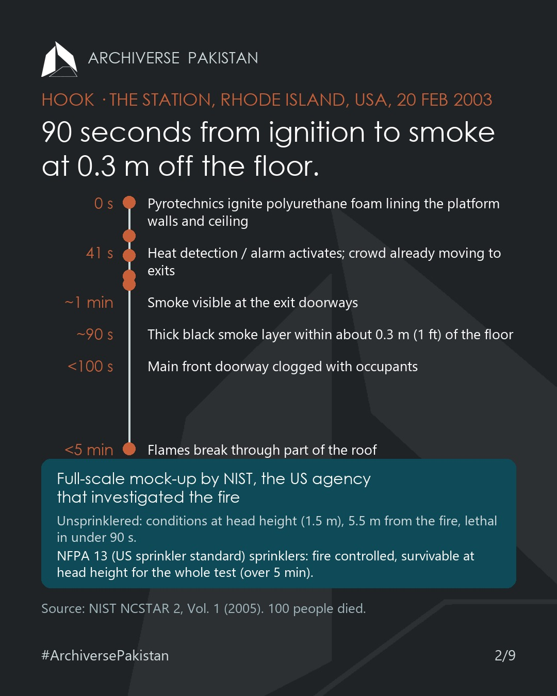
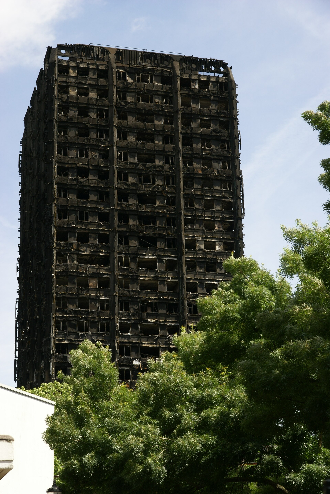

Fire safety is decided before the evacuation plan

1. The question
On 20 February 2003, pyrotechnics ignited the polyurethane foam lining the walls and ceiling of the stage platform at The Station nightclub, West Warwick, Rhode Island, USA. The fire spread along the walls and ceiling. NIST (the US National Institute of Standards and Technology, the federal agency that investigated the fire) records:
| Time after ignition | Event |
|---|---|
| 41 s | Heat detection / fire alarm activates; the crowd is already moving to the exits |
| a little more than 1 min | Smoke visible at the exit doorways |
| about 90 s | Thick black smoke layer within about 0.3 m (1 ft) of the main floor |
| under 100 s | Main front doorway clogged with occupants |
| under 5 min | Flames break through part of the roof |
The building was not sprinklered. 100 people died.
Our view: none of this was decided on the night. The foam lining, the absence of sprinklers and the exits were fixed at design and fit-out. Fire safety is decided at the drawing board, and the evacuation plan is the last layer, not the first. This course starts there.

2. The canvas
A fire's outcome is set by what the building already contains before ignition: the fuel and how it is arranged, the compartment it burns in, the barriers that stop it, the systems that detect and suppress it, and the routes people use to leave. This course takes those layers in strict order:
| Group | Episodes | What you will be able to do |
|---|---|---|
| Physics | 00 course map · 01 fire behaviour · 02 passive vs active protection and the fire strategy | Describe a design fire in heat release rate and fire load terms |
| Containment | 03 compartmentation · 04 fire resistance (the US test standard ASTM E119 / the European test standard EN 1363) · 05 doors, glazing, dampers, firestopping · 06 fire and smoke curtains, smoke control | Size compartments and specify rated assemblies |
| Materials | 07 reaction to fire and finishes · 08 fire-retardant treatment · 09 façades | Specify linings and façades by tested class |
| People | 10 occupancy and occupant load · 11 means of egress · 12 building types | Size exits and travel distances |
| Systems | 13 detection, alarm, signage, emergency lighting · 14 sprinklers, standpipes, pumps · 15 special suppression · 16 firefighting access | Coordinate active systems with the plan |
| Pakistan | 17 the code · 18 design practice · 19 materials market · 20 façades · 21 firefighting · 21a disasters and inquiries · 21b fire service capability · 21c private investment | Apply all of the above to Pakistani projects |
| Checklist | 22 a fire safety design checklist for Pakistani projects | Use it on your next project |
3. International standards and codes
BS 7974 and BS 9999 are British Standards, published by BSI, the UK's national standards body.
BS 7974:2019 — Application of fire safety engineering principles to the design of buildings. Code of practice. Published 31 March 2019, the first revision since 2001. The process runs in three stages:
- Qualitative design review (QDR): define the scope and objectives of the fire safety design, set the performance criteria, and propose one or more trial designs.
- Quantitative analysis: evaluate those designs with engineering methods.
- Assessment against criteria: compare the results with the acceptance criteria set in the QDR.
The 2019 edition incorporates the recommendations previously in PD 7974-0 and PD 7974-8. The PD 7974 series (BSI Published Documents) carries the detailed methods; PD 7974-1:2019 covers the initiation and development of fire within the enclosure of origin, the subject of Episode 01.
BS 9999:2017 — Fire safety in the design, management and use of buildings. Code of practice. Published 31 January 2017, superseding BS 9999:2008. It covers ongoing fire safety management throughout the entire life cycle of the building, and the design measures that make that management possible. It does not apply to individual dwelling-houses.
Regulation 38, Building Regulations 2010, England, UK (set out in Approved Document B, the government's practical guidance on meeting the fire requirements of England's Building Regulations, Vol. 2, 2019 edition as amended): where building work involves the erection or extension of a relevant building, the person carrying out the work gives fire safety information about the design, construction, services, fittings and equipment to the responsible person (the building's fire safety duty-holder under the Regulatory Reform (Fire Safety) Order 2005). Under the 2025 amendment (effective 2 March 2025) the deadline is the date of completion, or the date of occupation if earlier where the building is not occupied during the work; and the responsible person must acknowledge receipt and confirm the information is sufficient to understand, operate and maintain the building and its fire safety systems (Reg. 38(2A)).
4. Best practice
England: fire checked at planning, before work, and before occupation.
- Planning Gateway One. For planning applications made on or after 1 August 2021, a fire statement must accompany applications for "relevant buildings": those with two or more dwellings or educational accommodation, and 18 m or more in height or seven or more storeys. The Health and Safety Executive (HSE, Britain's national regulator for workplace health and safety) is a statutory consultee, and the planning authority must consult it before granting permission.
- Gateway 2. Since 1 October 2023 the Building Safety Regulator (BSR), England's new regulator for higher-risk buildings, has been the building control authority for higher-risk buildings (residential buildings over 18 m or seven storeys with at least two residential units, plus hospitals and care homes of the same height). Work can start only after BSR approval; the application includes a fire and emergency file, a construction control plan and a change control plan, and BSR has a 12-week determination period.
- Gateway 3. The building cannot be occupied until BSR has checked the work and issued a completion certificate (eight-week determination period), after which the building is registered with BSR.

The physics behind it. In NIST's full-scale reconstruction of The Station's platform, conditions at head height (1.5 m), 5.5 m from the fire, were lethal in under 90 seconds. With a sprinkler system installed to NFPA 13 (the US sprinkler standard), the fire was controlled and conditions at head height stayed survivable for the whole test, over five minutes; the computer model of the full nightclub gave the same result. NIST recommended that model codes require NFPA 13 sprinklers in all new nightclubs regardless of size, and in existing nightclubs with an occupancy limit greater than 100 people.
5. Pakistan today
The Building Code of Pakistan – Fire Safety Provisions 2016 (PEC bye-law notified by S.R.O. 1073(I)/2016, 31 October 2016, based on the NFPA 1 Fire Code 2015, the model fire code of the US National Fire Protection Association) already puts fire safety at the drawing stage:
| Clause | Requirement |
|---|---|
| §1.1.1(3) | Scope includes review of construction plans, drawings and specifications for life safety and fire protection systems, access and water supplies |
| §1.7.12.2 | Plans are submitted to the authority having jurisdiction (AHJ, e.g. the building control authority) for approval prior to construction |
| §1.14.1 | Where the AHJ requires, construction documents, design calculations and shop drawings are submitted, reviewed and approved before work starts |
| §1.14.2 | The applicant ensures the construction documents include all of the fire protection requirements, the shop drawings comply, and an approved set is kept on site |
| §1.14.3 | The AHJ promulgates the review criteria and time frames |
| §4.3.3 | The owner obtains a fire certificate from the AHJ every three years, attesting that features, systems and use remain consistent with the code |
That is a sound legal base, close to the logic of England's gateways: drawings before work, a check in use. How it is applied in authority practice is the subject of Episodes 17 and 18, which will report only what is confirmed.
6. Our suggestion: a proposal for discussion
A one-page fire strategy drawing in every §1.14 submission.
Logic, in three steps:
- §1.14.2 already requires all fire protection requirements in the construction documents.
- A single strategy sheet makes that requirement checkable at a glance: occupancy classification and occupant load; compartments and their fire resistance periods; escape routes, exits and travel distances; detection, alarm and suppression; smoke control; firefighting access and water supply; and the design fire.
- Under §1.14.3, the AHJ can make the sheet a published submission requirement with a review time frame.
Precedent: England's planning-stage fire statement (from 1 August 2021) and the Gateway 2 approval with its fire and emergency file (from 1 October 2023). BS 7974's qualitative design review is the engineering method behind such a sheet.
Assumptions: authorities have reviewers trained to read a fire strategy; designers share a common template.
Limits, and what to test first: England applies Gateway One and Gateways 2–3 to tall residential buildings, not to every building, so a Pakistani version needs a threshold (height, occupancy or occupant load). It adds a document and review time; BSR's own Gateway 2 carries a 12-week determination period. A pilot with one authority, on one building type, would show the review time and the drawing errors caught before any wider rule.
Who does what:
- Architects and engineers: draw the strategy at concept stage, before the plan is frozen.
- AHJs (CDA, LDA, SBCA and others): publish the sheet as a §1.14 submission requirement with a time frame.
- PEC: in the S30 Code Fix revision draft, name the stage at which the strategy is submitted and who signs it.
- Schools: teach the strategy sheet as a studio deliverable, so graduates arrive able to draw one.
7. Your suggestion
On your last project, at which stage was the first fire strategy drawing made, and who drew it? And what would you put on a one-page fire strategy sheet for a Pakistani approval: which items, in which order? Send us your template or your list in the comments; with your permission, the best proposals feed the Season 1 checklist (Episode 22).
Sources
- PEC, Building Code of Pakistan – Fire Safety Provisions 2016 — https://www.pec.org.pk/wp-content/uploads/2021/05/Building-Code-of-Pakistan-Fire-Safety-Provisions-2016.pdf
- NIST NCSTAR 2, Report of the Technical Investigation of The Station Nightclub Fire, Vol. 1 (2005) — https://nvlpubs.nist.gov/nistpubs/Legacy/NCSTAR/ncstar2v1.pdf
- gov.uk, "Fire safety and high-rise residential buildings (from 1 August 2021)" — https://www.gov.uk/guidance/fire-safety-and-high-rise-residential-buildings-from-1-august-2021
- Building Safety Regulator, "BSR is now the building control authority" — https://buildingsafety.campaign.gov.uk/building-safety-regulator-making-buildings-safer/building-safety-regulator-is-now-the-building-control-authority/
- Specification Online, "BSR is now the Building Control Authority for higher-risk buildings in England", 6 Oct 2023 — https://specificationonline.co.uk/articles/2023-10-06/hse/bsr-is-now-the-building-control-authority-for-higher-risk-buildings-in-england
- MHCLG, Approved Document B, Vol. 2, 2019 edition as amended, Regulation 38 — https://assets.publishing.service.gov.uk/media/67d022edf5520788b54eeeda/Approved_Document_B_volume_2_-_Buildings_other_than_dwellings_2019_edition_incorporating_2020_and_2022_amendments_collated_with_2025_2026_and_2029_amendments.pdf
- BSI Knowledge, BS 7974:2019 — https://knowledge.bsigroup.com/products/application-of-fire-safety-engineering-principles-to-the-design-of-buildings-code-of-practice ; "What's new in the application of fire safety engineering principles?" — https://knowledge.bsigroup.com/articles/whats-new-in-the-application-of-fire-safety-engineering-principles
- BSI Knowledge, BS 9999:2017 — https://knowledge.bsigroup.com/products/fire-safety-in-the-design-management-and-use-of-buildings-code-of-practice?version=standard